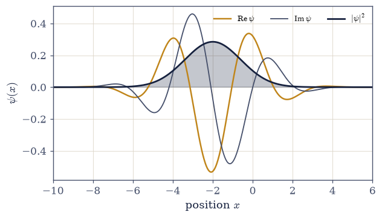
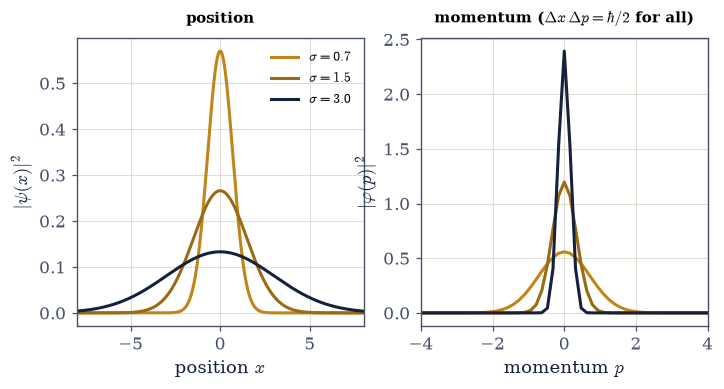
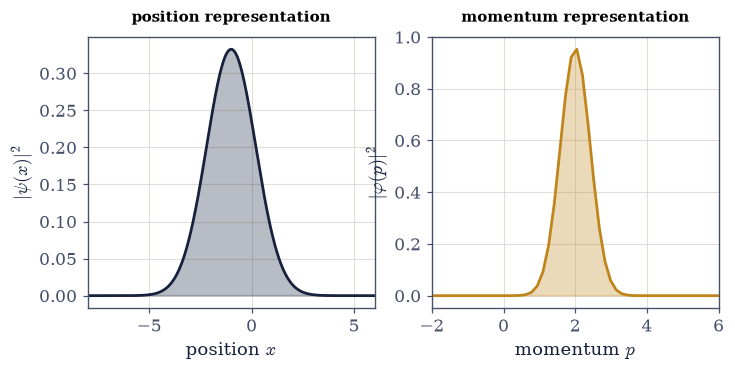

6.9 From Vectors to Wave Functions: The Position Representation and Continuous Spectra#
Notebook overview#
Every notebook so far has lived in a finite number of dimensions — two for a qubit, three or four for the small examples. This notebook opens Movement II by taking the same formalism to infinitely many dimensions, and the central message is one of reassurance: nothing here is a new postulate. Wave mechanics is not a rival theory to the vectors and operators we have been using; it is exactly that theory, written in a continuous basis. A particle on a line has a state \(|\psi\rangle\) whose “components” in the position basis form a wave function \(\psi(x)=\langle x|\psi\rangle\) — the amplitude to find the particle at \(x\) — and every structure of Movements 0–I carries straight over.
The translation is worth seeing as a table, because each line is a finite object we already know becoming its continuous cousin:
finite-dimensional (Movements 0–I) |
infinite-dimensional (here) |
|---|---|
components $c_i=\langle e_i |
\psi\rangle$ |
inner product $\langle\phi |
\psi\rangle=\sum_i\phi_i^{*}\psi_i$ |
normalization $\sum_i |
c_i |
resolution of the identity $\sum_i |
e_i\rangle\langle e_i |
a Hermitian matrix |
a differential operator, \(\hat p=-i\hbar\,d/dx\) |
change of basis (a unitary) |
the Fourier transform |
Two payoffs follow. The position and momentum operators obey the canonical commutator \([\hat x, \hat p]=i\hbar\) — the continuous cousin of the Pauli non-commutation of §6.6 — and feeding it into the Robertson relation of §6.6 derives the Heisenberg uncertainty principle \(\Delta x\,\Delta p\ge \hbar/2\), saturated by the Gaussian at every width (answering the forward pointer of §6.6). And the Fourier transform is revealed as nothing but the unitary change of basis between the position and momentum representations, so a state narrow in \(x\) is broad in \(p\): the uncertainty principle is Fourier reciprocity.
We are honest about the one genuinely new thing the continuum brings. The eigenstates of position and momentum — sharp points and plane waves — are not normalizable: they are idealized limits, not physical states, and this is exactly where the completeness we deferred in §6.1 finally bites. We name the rigorous home (the rigged Hilbert space) without belaboring it, and keep the physics in the normalizable wave packets.
As in every Volume VI notebook, each exercise opens with a crystal-clear statement and enumerated parts, each naming the exact operation — a discretized grid, numpy.fft.fft/ifft/fftfreq for
the Fourier transform and the spectral-derivative momentum operator (with the normalization stated),
and numpy.trapezoid for the expectation integrals.
Conventions. We set \(\hbar=1\). The grid is \(N\) points on \([-L/2,L/2)\) with spacing \(dx=L/N\); the conjugate (angular) wavenumber grid is \(k=2\pi\,\)
numpy.fft.fftfreq(N, dx)and the momentum is \(p=\hbar k\). The momentum operator is the spectral derivative, \(\hat p\psi=\)ifft(ℏk· fft(ψ)). All numerical checks are made in the bulk, away from the periodic grid boundaries where the spectral derivative wraps around. The Schrödinger equation solved on this grid is §6.10; coherent states are §6.12; wave-packet dynamics is §6.13. See Sakurai & Napolitano (§1.6–1.7); Nolting; and Notebooks §6.1 (states, completeness), §6.2 (operators), §6.3 (change of basis), §6.5 (the Born rule), §6.6 (the uncertainty relation), and Volume II (canonical quantization).
Theory in brief#
The wave function as continuous components#
A particle on a line has a state whose components in the continuous position basis \(\{|x\rangle\}\) form the wave function,
Born’s rule becomes a probability density: \(|\psi(x)|^2\,dx\) is the probability of finding the particle in \([x,x+dx]\) — the continuous version of the \(|c_i|^2\) of §6.1 and §6.5.
The position and momentum operators#
In the position representation, position acts by multiplication and momentum by differentiation — the derivative being what the generator of translations must look like on wave functions, an identification Sakurai & Napolitano (§1.6) make precise:
both Hermitian (with decay at infinity). On a computer \(\hat x\) multiplies by the grid, and \(\hat p\) is the spectral derivative — multiply by \(\hbar k\) in Fourier space — the infinite-dimensional Hermitian operators of §6.2.
The canonical commutator#
Apply \(\hat x\hat p-\hat p\hat x\) to any wave function and the product rule does the rest: \(-i\hbar\left[x\psi'-(x\psi)'\right]=i\hbar\,\psi\), one line of calculus from the operators above (§1.6 of Sakurai & Napolitano derives it basis-independently, from translations),
the foundational relation of quantum mechanics: the continuous analogue of \([\sigma_x,\sigma_y]=2i \sigma_z\), and what canonical quantization promotes the classical Poisson bracket \(\{x,p\}=1\) into (Volume II; \(\hbar\to0\) recovers classical mechanics). Everything non-classical flows from it.
The position–momentum uncertainty relation#
Feeding \([\hat x,\hat p]=i\hbar\) into the Robertson relation of §6.6 gives the Heisenberg uncertainty principle, now derived rather than postulated,
The Gaussian is the minimum-uncertainty state — the wave-mechanical cousin of the spin \(|{+}z\rangle\) of §6.6, and the seed of coherent states (§6.12).
The Fourier transform as the momentum representation#
The momentum-space wave function is the Fourier transform of \(\psi(x)\),
and the momentum basis \(\{|p\rangle\}\) is just another orthonormal basis. The Fourier transform is the unitary change of basis between position and momentum (§6.3); Parseval’s theorem is its norm-preservation. Conjugate widths (\(\Delta p\approx\hbar/2\Delta x\)) make the uncertainty principle literally Fourier reciprocity.
Continuous spectra and non-normalizable eigenstates#
The genuinely new feature. The eigenstates of \(\hat x\) (points \(|x_0\rangle\)) and of \(\hat p\) (plane waves \(e^{ipx/\hbar}\), the de Broglie waves with \(\lambda=2\pi\hbar/p\)) are not square-integrable,
They are idealized limits, \(\delta\)-normalized — and here the completeness deferred from §6.1 finally bites. The rigorous home is the rigged Hilbert space (named, not developed); physical states are normalizable wave packets.
Setup#
import matplotlib.pyplot as plt
import numpy as np
from ecp import draw, validate
ACCENT, INK, SOFT = draw.ACCENT, draw.INK, draw.SOFT
RED = "#c1121f"
HBAR = 1.0 # ℏ = 1 throughout
# A discretized grid on [−L/2, L/2): N points, spacing dx. The conjugate wavenumber grid is
# k = 2π·numpy.fft.fftfreq(N, dx); the momentum grid is p = ℏk. The momentum operator is the spectral
# derivative p̂ψ = ifft(ℏk·fft(ψ)) (the FFT normalization: numpy's fft/ifft are an inverse pair, so the
# round trip carries no extra factor). All checks are made in the BULK, away from the periodic edges.
N_GRID = 2048
L_BOX = 40.0
DX = L_BOX / N_GRID
X_GRID = -L_BOX / 2 + DX * np.arange(N_GRID)
def trapz(values, x):
"""Integrate ``values`` over the grid ``x`` with ``numpy.trapezoid`` (the trapezoidal rule)."""
return np.trapezoid(values, x)
def normalize(psi, x):
"""Return ``psi`` scaled so that $\\int|\\psi(x)|^2\\,dx=1$ {eq}`eq-wavefunction`.
Divides by $\\sqrt{\\int|\\psi|^2dx}$ (the continuous version of dividing by the norm in §6.1); after
this $|\\psi(x)|^2$ is a genuine probability density.
"""
return psi / np.sqrt(trapz(np.abs(psi) ** 2, x))
def x_operator(psi, x):
"""The position operator $\\hat x\\psi=x\\,\\psi(x)$ {eq}`eq-xp-operators` — multiplication by the grid."""
return x * psi
def p_operator(psi, x):
"""The momentum operator $\\hat p\\psi=-i\\hbar\\,d\\psi/dx$ by the **spectral derivative** {eq}`eq-xp-operators`.
Differentiation is exact (to machine precision) in Fourier space: $\\hat p$ multiplies by $\\hbar k$
there, so $\\hat p\\psi=$``numpy.fft.ifft(ℏk·numpy.fft.fft(psi))`` with $k=2\\pi\\,$``numpy.fft.fftfreq(
N, dx)``. The result is exact in the bulk and wraps around at the periodic grid edges.
Parameters
----------
psi : numpy.ndarray
The wave function sampled on ``x``.
x : numpy.ndarray
A uniform grid.
Returns
-------
numpy.ndarray
$\\hat p\\psi$ on the grid.
"""
n = len(x)
dx = x[1] - x[0]
k = 2 * np.pi * np.fft.fftfreq(n, d=dx)
return np.fft.ifft(HBAR * k * np.fft.fft(psi))
def to_momentum(psi, x):
"""The momentum-space wave function $\\varphi(p)=\\langle p|\\psi\\rangle$ {eq}`eq-fourier`.
The normalized Fourier transform $\\varphi(p)=(2\\pi\\hbar)^{-1/2}\\int\\psi(x)e^{-ipx/\\hbar}dx$,
evaluated with `numpy.fft.fft`. The grid offset $x_0$ contributes a phase $e^{-ipx_0/\\hbar}$, and
the factor $dx/\\sqrt{2\\pi\\hbar}$ makes the transform **unitary** (Parseval: the norm is preserved).
Returns $\\varphi$ and the (ascending) momentum grid $p=\\hbar k$.
Parameters
----------
psi : numpy.ndarray
The position-space wave function.
x : numpy.ndarray
The position grid.
Returns
-------
phi : numpy.ndarray
The momentum-space wave function on the ascending ``p`` grid.
p : numpy.ndarray
The momentum grid (ascending).
"""
n = len(x)
dx = x[1] - x[0]
x0 = x[0]
k = 2 * np.pi * np.fft.fftfreq(n, d=dx)
p = HBAR * k
phi = dx / np.sqrt(2 * np.pi * HBAR) * np.exp(-1j * p * x0 / HBAR) * np.fft.fft(psi)
order = np.argsort(p)
return phi[order], p[order]
def expectation(op, psi, x):
"""The expectation value $\\langle\\psi|\\hat O|\\psi\\rangle=\\int\\psi^{*}(\\hat O\\psi)\\,dx$ (§6.5).
Applies the operator ``op(psi, x)`` and integrates against $\\psi^{*}$ with `numpy.trapezoid`; the
result is real for a Hermitian operator.
"""
return trapz(np.conj(psi) * op(psi, x), x).real
def uncertainty(op, psi, x):
"""The uncertainty $\\Delta O=\\sqrt{\\langle\\hat O^2\\rangle-\\langle\\hat O\\rangle^2}$ (§6.5, §6.6).
Applies ``op`` twice for $\\langle\\hat O^2\\rangle$. For $\\hat x$ and the spectral $\\hat p$ this
gives $\\Delta x$ and $\\Delta p$, whose product the uncertainty relation bounds.
"""
mean = expectation(op, psi, x)
mean_sq = trapz(np.conj(psi) * op(op(psi, x), x), x).real
return np.sqrt(max(mean_sq - mean**2, 0.0))
def gaussian_packet(x, x0=0.0, p0=0.0, sigma=1.0):
"""A normalized Gaussian wave packet $\\propto e^{-(x-x_0)^2/4\\sigma^2}e^{ip_0x/\\hbar}$ {eq}`eq-xp-uncertainty`.
Centered at $x_0$ with mean momentum $p_0$ and position width $\\sigma$ ($\\Delta x=\\sigma$). It is
the minimum-uncertainty state, $\\Delta x\\,\\Delta p=\\hbar/2$.
"""
psi = np.exp(-((x - x0) ** 2) / (4 * sigma**2)) * np.exp(1j * p0 * x / HBAR)
return normalize(psi, x)
Exercise 1 — The wave function and its probability density#
A particle on a line is described by a wave function \(\psi(x)\) on a grid. Normalize it so that \(\int|\psi(x)|^2\,dx=1\), interpret \(|\psi(x)|^2\) as a probability density, and compute the probability of finding the particle in a region \([a,b]\) Eq. 429.
Set up the grid (
X_GRID) and build a wave packet (agaussian_packet).Normalize it so \(\int|\psi|^2dx=1\) with
numpy.trapezoid(thenormalizehelper).Read \(|\psi(x)|^2\) as the Born probability density — the continuous \(|c_i|^2\) of §6.1/§6.5.
Compute \(P(a<x<b)=\int_a^b|\psi|^2dx\) by integrating the density over the sub-grid with
numpy.trapezoid. Frame: \(\psi(x)=\langle x|\psi\rangle\) are the components of \(|\psi\rangle\) in the position basis.
∫|ψ(x)|² dx = 1.00000000 (normalized: probability density)
P(-2.0 < x < 1.0) = ∫ |ψ|² dx = 0.4816
Validation 1#
✓ the wave function is normalized, ∫|ψ(x)|²dx=1; |ψ(x)|² is a probability density (the continuous Born rule) [got 1 vs expected 1 (rtol=1e-06)]
True

Fig. 438 A wave function on a line. A Gaussian wave packet carrying momentum: its real part (amber) and imaginary part (grey) oscillate at the de Broglie wavelength under a Gaussian envelope, while the probability density \(|\psi(x)|^2\) (ink, filled) is a smooth bump — the likelihood of finding the particle at each point. The wave function \(\psi(x)=\langle x|\psi\rangle\) is simply the list of the state’s components in the continuous position basis, exactly as a qubit’s two numbers were its components in \(\{|0\rangle,|1\rangle\}\); the only change is that the index \(x\) now runs over a continuum, so \(\sum_i\) has become \(\int dx\) and \(|c_i|^2\) has become the density \(|\psi(x)|^2\).#
Exercise 2 — The position and momentum operators#
Implement the position operator \(\hat x\) (multiplication by the grid) and the momentum operator \(\hat p=-i\hbar\,d/dx\) (the spectral derivative), and compute their expectation values \(\langle x\rangle\) and \(\langle p\rangle\) for a wave packet, confirming both are real Eq. 430.
The position operator is the
x_operatorhelper, \(\hat x\psi=x\cdot\psi\).The momentum operator is the
p_operatorhelper, the spectral derivative \(\hat p\psi=\)numpy.fft.ifft(ℏk· numpy.fft.fft(psi))with \(k=2\pi\,\)numpy.fft.fftfreq(N, dx).Compute \(\langle x\rangle\) and \(\langle p\rangle\) with the
expectationhelper (\(\int\psi^{*}\hat O\psi\,dx\) vianumpy.trapezoid).Confirm both are real (the imaginary parts vanish — Hermitian operators) and match the packet’s centre \(x_0\) and mean momentum \(p_0\). Frame: the infinite-dimensional Hermitian operators of §6.2.
⟨x⟩ = -2.0000 (packet centre x0 = −2.0); Im = -8.7e-19
⟨p⟩ = 1.5000 (mean momentum p0 = 1.5); Im = 6.9e-18
Validation 2#
✓ position multiplies and momentum differentiates (p̂=−iℏd/dx via the spectral derivative); both ⟨x⟩ and ⟨p⟩ are real
True
Exercise 3 — The canonical commutator \([\hat x,\hat p]=i\hbar\)#
Verify the foundational relation of quantum mechanics: \([\hat x,\hat p]\psi=i\hbar\psi\) for a smooth test function, in the bulk of the grid Eq. 431.
Take a smooth wave packet and compute \(\hat x\hat p\psi\) (apply
p_operatorthen multiply by \(x\)) and \(\hat p\hat x\psi\) (multiply by \(x\) then applyp_operator).Form the commutator \([\hat x,\hat p]\psi=\hat x\hat p\psi-\hat p\hat x\psi\).
Confirm it equals \(i\hbar\psi\) in the bulk (the middle half of the grid, away from the periodic edges where the spectral derivative wraps) by checking the ratio \([\hat x,\hat p]\psi/(i\hbar\psi)\approx1\).
Note this is the continuous analogue of the Pauli non-commutation of §6.6 and the quantization of \(\{x,p\}=1\) (Volume II). Frame: everything non-classical flows from this.
[x̂,p̂]ψ / (iℏψ) in the bulk: mean = 1.000000, std = 4.7e-07
→ [x̂,p̂] = iℏ (the continuous cousin of [σx,σy]=2iσz, and the quantization of {x,p}=1)
Validation 3#
✓ the canonical commutator [x̂,p̂]=iℏ holds (verified in the bulk of the grid) [got 1 vs expected 1 (rtol=0.001)]
True
Exercise 4 — The position–momentum uncertainty relation#
Compute \(\Delta x\cdot\Delta p\) for a wave packet and confirm the Heisenberg uncertainty relation \(\Delta x\,\Delta p\ge\hbar/2\) — now derived from the canonical commutator through the Robertson relation of §6.6, not postulated Eq. 432.
Compute \(\Delta x=\sqrt{\langle\hat x^2\rangle-\langle\hat x\rangle^2}\) with the
uncertaintyhelper applied tox_operator.Compute \(\Delta p\) likewise with
p_operator(the spectral derivative).Form the product \(\Delta x\cdot\Delta p\) and confirm it is \(\ge\hbar/2\).
Connect: Robertson (§6.6) with \([\hat x,\hat p]=i\hbar\) gives \(\Delta x\,\Delta p\ge\tfrac12|\langle[ \hat x,\hat p]\rangle|=\hbar/2\). Frame: Heisenberg’s principle is a theorem about the commutator.
narrow (σ=0.8): Δx = 0.8000, Δp = 0.6250, Δx·Δp = 0.5000 (≥ ℏ/2 = 0.5)
medium (σ=1.4): Δx = 1.4000, Δp = 0.3571, Δx·Δp = 0.5000 (≥ ℏ/2 = 0.5)
broad (σ=2.5): Δx = 2.5000, Δp = 0.2000, Δx·Δp = 0.5000 (≥ ℏ/2 = 0.5)
two-bump packet: Δx·Δp = 0.7692 (well above ℏ/2 — not a minimum-uncertainty state)
Validation 4#
✓ the position–momentum uncertainty relation Δx·Δp ≥ ℏ/2 follows from [x̂,p̂]=iℏ (Robertson, §6.6)
True
Exercise 5 — The Gaussian: the minimum-uncertainty state#
Show that the Gaussian saturates the uncertainty relation, \(\Delta x\,\Delta p=\hbar/2\), for any width — the position and momentum spreads trade off, but their product is fixed at the minimum Eq. 432.
Build Gaussians \(\psi\propto e^{-x^2/4\sigma^2}\) of several widths \(\sigma\) with
gaussian_packet.For each, compute \(\Delta x\) and \(\Delta p\) with the
uncertaintyhelper.Confirm \(\Delta x=\sigma\), \(\Delta p=\hbar/2\sigma\), and the product \(\Delta x\cdot\Delta p=\hbar/2\) exactly.
Note the trade-off: narrow in \(x\) means broad in \(p\), but the product never beats \(\hbar/2\). Frame: the wave-mechanical analogue of the spin \(|{+}z\rangle\) of §6.6, and the seed of coherent states (§6.12).
σ = 0.6: Δx = 0.6000 (=σ), Δp = 0.8333 (=ℏ/2σ), Δx·Δp = 0.5000
σ = 1.0: Δx = 1.0000 (=σ), Δp = 0.5000 (=ℏ/2σ), Δx·Δp = 0.5000
σ = 1.6: Δx = 1.6000 (=σ), Δp = 0.3125 (=ℏ/2σ), Δx·Δp = 0.5000
σ = 2.5: Δx = 2.5000 (=σ), Δp = 0.2000 (=ℏ/2σ), Δx·Δp = 0.5000
σ = 4.0: Δx = 4.0000 (=σ), Δp = 0.1250 (=ℏ/2σ), Δx·Δp = 0.5000
every width saturates Δx·Δp = ℏ/2 = 0.5
Validation 5#
✓ the Gaussian is the minimum-uncertainty state: Δx·Δp = ℏ/2 at every width [max|Δ| = 3.22729e-06 (rtol=1e-06, atol=0.02)]
True
findfont: Failed to find font weight 600, now using 700.
findfont: Failed to find font weight 600, now using 700.

Fig. 439 The Gaussian saturates the bound at every width. Left: three Gaussian wave packets, narrow to broad, with their position spreads \(\Delta x=\sigma\). Right: the corresponding momentum distributions \(|\varphi(p)|^2\) — a narrow packet in \(x\) is a broad one in \(p\) and vice versa, the spreads trading off as \(\Delta p=\hbar/2\sigma\). Yet the product \(\Delta x\,\Delta p\) is pinned at exactly \(\hbar/2\) for all of them (inset values): the Gaussian is the wave-mechanical minimum-uncertainty state, the continuous cousin of the spin \(|{+}z\rangle\) that saturated the relation in §6.6. The reciprocity of the two widths is the uncertainty principle, and it is nothing but a property of the Fourier transform.#
Exercise 6 — The Fourier transform as the momentum representation#
Compute the momentum-space wave function \(\varphi(p)=\langle p|\psi\rangle\) and verify that the Fourier transform is the unitary change of basis between position and momentum: it preserves the norm (Parseval), and \(\langle p\rangle\) computed in either representation agrees Eq. 433.
Compute \(\varphi(p)\) with the
to_momentumhelper — the normalized Fourier transform \((2\pi\hbar)^{-1/2}\int\psi e^{-ipx/\hbar}dx\) vianumpy.fft.fft, on the momentum grid \(p=\hbar k\).Verify Parseval: \(\int|\varphi(p)|^2dp=\int|\psi(x)|^2dx=1\) (
numpy.trapezoid).Verify \(\langle p\rangle\) agrees: from the position representation (\(\int\psi^{*}\hat p\psi\,dx\), the
expectationofp_operator) and from the momentum representation (\(\int p\,|\varphi(p)|^2dp\)).Show conjugate widths: a narrow packet in \(x\) is broad in \(p\). Frame: the Fourier transform is the unitary change of basis (§6.3); the uncertainty principle is Fourier reciprocity.
Parseval: ∫|φ(p)|² dp = 1.000000 (= ∫|ψ(x)|² dx = 1, unitary)
⟨p⟩ from x-rep (−iℏd/dx) = 2.0000; ⟨p⟩ from p-rep (∫p|φ|²dp) = 2.0000
σ=0.7: Δx = 0.700, Δp = 0.714 (narrow x ↔ broad p)
σ=2.0: Δx = 2.000, Δp = 0.250 (narrow x ↔ broad p)
Validation 6#
✓ the Fourier transform is the unitary position↔momentum change of basis: Parseval (norm preserved) and ⟨p⟩ agree across representations [max|Δ| = 4.44089e-16 (rtol=0.01, atol=1e-09)]
True

Fig. 440 One state, two representations. The same wave packet shown in the position representation \(|\psi(x)|^2\) (left, ink) and the momentum representation \(|\varphi(p)|^2\) (right, amber), connected by the Fourier transform — the unitary change of basis between \(\{|x\rangle\}\) and \(\{|p\rangle\}\), exactly as a qubit could be written in the \(z\)- or \(x\)-basis (§6.3). The packet sits near \(x=-1\) with mean momentum \(p\approx2\), and the two pictures carry identical physics: the norm is one in both (Parseval), and \(\langle p\rangle\) is the same computed either way. Schrödinger’s wave mechanics and Heisenberg’s matrices, which felt like rival theories in 1926, are just these two bases — and this transform is the unitary that relates them.#
Exercise 7 — Momentum eigenstates, de Broglie, and the continuous spectrum (student)#
Show that a plane wave \(\psi(x)=e^{ip_0x/\hbar}\) is an eigenstate of the momentum operator, find its de Broglie wavelength, and explain honestly why it is not a physical state — the genuinely new feature of the continuum Eq. 434.
Build the plane wave \(\psi(x)=e^{ip_0x/\hbar}\) on the grid.
Apply the
p_operatorand confirm in the bulk that \(\hat p\psi=p_0\psi\) — an eigenvalue \(p_0\).Compute the de Broglie wavelength \(\lambda=2\pi\hbar/p_0\).
Show \(\int|\psi|^2dx\) grows without bound as the box grows (\(|\psi|^2=1\) everywhere), so the plane wave is non-normalizable — a continuous-spectrum eigenstate, \(\delta\)-normalized, living in the rigged Hilbert space (named, not developed).
Note that physical states are normalizable wave packets, superpositions of plane waves. Frame: where the completeness deferral of §6.1 finally bites.
p̂ψ / ψ in the bulk = 1.9999 (eigenvalue p0 = 2.0)
de Broglie wavelength λ = 2πℏ/p = 3.1416
box L= 20: ∫|ψ|² dx = 20.0 (∝ L → diverges: not normalizable)
box L= 40: ∫|ψ|² dx = 40.0 (∝ L → diverges: not normalizable)
box L= 80: ∫|ψ|² dx = 80.0 (∝ L → diverges: not normalizable)
→ a momentum eigenstate is a continuous-spectrum, δ-normalized idealization; physical states are wave packets.
Validation 7#
✓ a plane wave e^{ip₀x/ℏ} is a momentum eigenstate (de Broglie); it is non-normalizable — the continuous spectrum, δ-normalized (the rigged Hilbert space) [got 1.99992 vs expected 2 (rtol=0.01)]
True
Exercise 8 — Wave mechanics is the same mechanics#
Nothing in this notebook was a new postulate. The wave function is the state vector’s components in the position basis, \(\psi(x)=\langle x|\psi\rangle\); the inner product is an integral; the momentum operator is a derivative, \(\hat p=-i\hbar\,d/dx\); and the change to momentum is a Fourier transform. Every line of the bridge table from the overview is a finite object we already had, grown to a continuum. The one genuinely new thing — the continuous spectrum — cost us normalizability for the idealized position and momentum eigenstates and gave us, in return, the uncertainty principle as Fourier reciprocity and the Gaussian as its sharpest state.
This exercise (synthesis). No new computation: the correspondence is the result. Schrödinger’s wave mechanics and Heisenberg’s matrices felt like rival theories for a year in 1926; they are the same theory in two bases, and the Fourier transform is the unitary that connects them — a fact we just verified on a grid. With the position representation in hand, the next notebook (§6.10) writes the Schrödinger equation as a differential equation, discretizes it into a matrix, and solves it the way we solved every operator problem in Movement 0 — by diagonalizing. The arena has changed from two amplitudes to a continuum of them; the method has not changed at all.
Notebook summary#
Wave mechanics as the same formalism in infinitely many dimensions — the opening of Movement II.
The wave function Eq. 429: \(\psi(x)=\langle x|\psi\rangle\), the components in the position basis; \(\int|\psi|^2dx=1\) with \(|\psi(x)|^2\) a Born density; sums become integrals and the resolution of the identity becomes \(\int|x\rangle\langle x|dx=I\).
The operators Eq. 430: \(\hat x\) multiplies by the grid, \(\hat p=-i\hbar\,d/dx\) is the spectral derivative (
numpy.fft) — the infinite-dimensional Hermitian operators of §6.2.The canonical commutator Eq. 431: \([\hat x,\hat p]=i\hbar\) (verified in the bulk) — the continuous cousin of the Pauli non-commutation, the quantization of \(\{x,p\}=1\).
Uncertainty Eq. 432: \(\Delta x\,\Delta p\ge\hbar/2\) derived from the commutator via Robertson (§6.6), saturated by the Gaussian at every width.
The Fourier transform Eq. 433: the unitary position↔momentum change of basis (Parseval; \(\langle p\rangle\) agrees both ways) — the uncertainty principle as Fourier reciprocity.
The continuous spectrum Eq. 434: plane waves are non-normalizable, \(\delta\)-normalized eigenstates (the rigged Hilbert space); physical states are wave packets — where the completeness deferral of §6.1 finally bites.
Wave mechanics is the same mechanics. The next notebook diagonalizes the Schrödinger operator on a grid; the method is the one from Movement 0, only the arena is new.
Outlook#
The Schrödinger equation on a grid (§6.10): the differential equation discretized to a matrix eigenproblem and solved by diagonalization — bound states and spectra.
One-dimensional systems (§6.11), the harmonic oscillator and coherent states (§6.12), wave-packet dynamics (§6.13): split-step Fourier and Crank–Nicolson propagation.
The rigged Hilbert space and the spectral theorem for continuous spectra (a horizon, named).
Cross-reference §6.1 (states / completeness), §6.2 (operators), §6.3 (change of basis), §6.5 (the Born rule), §6.6 (uncertainty), Volume II (canonical quantization), and forward to §6.10–§6.13.